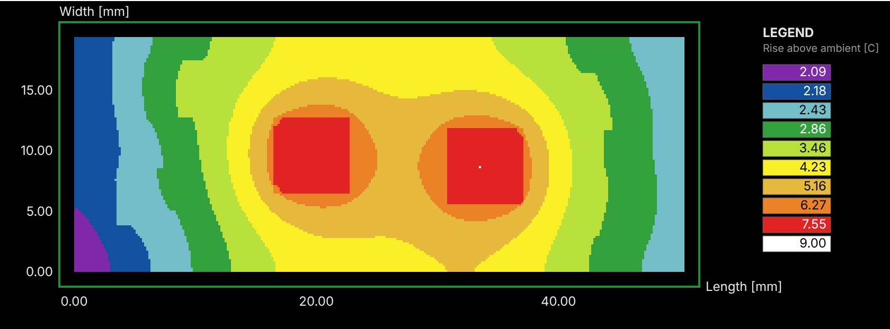
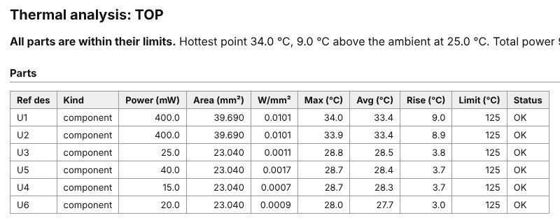
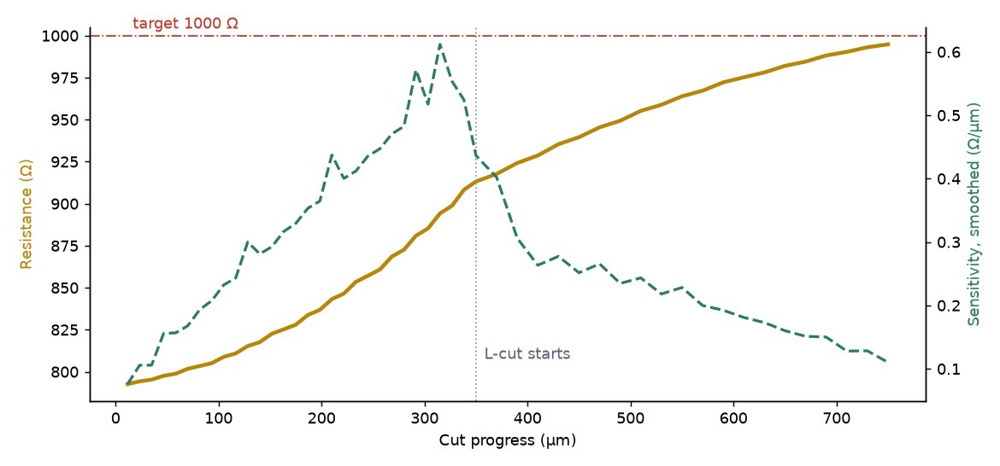
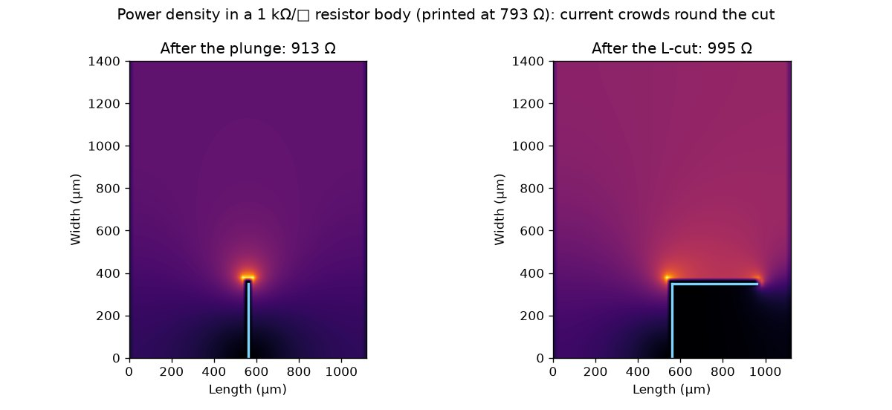

Thermal analysis and laser trim simulation
Two design-stage checks built into HLayout for thick-film hybrids: how hot every die, resistor and part will run on the real printed film stack, and how a laser trim will bring each printed resistor up to value.
Free and open source · GPL-3.0 · Windows, Linux and macOSHow hot will it run?
A steady-state heat-conduction solve of the layout you have drawn, not a hand calculation: the substrate, every printed film where it is printed, the attach layers and the parts, each with its own conductivity.

What it models
- The real stack. Substrate, conductors, dielectric, resistor ink and glaze in print order, each present only where its layer is drawn. A resistor printed straight on the substrate touches the substrate; one printed over dielectric is insulated by it.
- Thin layers count. Conductance between materials is taken in series, so a thin, poor conductor such as dielectric or epoxy under a die keeps its full thermal resistance.
- Parts and powers. Set a power for each die or component by reference designator; printed resistors take their power from the Resistor Designer.
- Boundaries. The base at a fixed temperature, or cooled through a heat-transfer coefficient to ambient, with optional weak cooling from the top surface.
- Materials. Reference values for alumina, aluminium nitride, beryllia, thick-film pastes, silicon, GaAs, epoxies and solder, each replaceable with a measured figure.
What you get
- A parts table with maximum and average temperature, rise and power density, checked against each part's limit and sorted with failures first.
- Temperature maps of the top surface, as an infrared camera would see it, and of the substrate.
- Isotherms drawn as contours on a layer of the design, so the heat picture sits over the layout.
- A self-contained HTML report and a CSV of the parts table, with an energy-balance check.

Trim every printed resistor to value
Thick-film resistors are printed below their value and laser-trimmed up, because a cut can only remove ink. The trim simulator shows each step of the cut before the part reaches the trim system.


How it works
The resistor body from the Resistor Designer, its length, width and ink, is solved as a fine resistive sheet with the terminations along each end. The cut is added a step at a time with your kerf width: a plunge in from an edge, optionally turned into an L-cut that runs along the resistor. At every step the simulator reports the resistance, the sensitivity in ohms per micron of cut, and the current and power field. A cut that severs the body is reported as open.
Why the L-cut
A plunge is fast, but its sensitivity climbs as the remaining path narrows, so a small overrun means a large overshoot. Turning the cut through 90° keeps the remaining path a fixed width: the resistance rises slowly and the trim stops accurately on value. Use the simulator to choose the plunge depth and L length for each resistor before writing the trim program.
Run both from Python
Everything in the dialogs is available from the console or a script, so a design can be checked on every change.
# thermal: powers by reference designator (mW), then solve and report s.set_thermal_power("U1", 400) s.set_thermal_power("U2", 400) result = s.run_thermal() s.export_thermal_report(result, "out/alu8_thermal.html") # trim: a 1 kohm/sq body 1.12 x 1.40 mm, 40 um kerf, plunge then L-cut from hlayout.core.trim_sim import TrimSimulator sim = TrimSimulator(1120, 1400, 1000.0) sim.add_plunge(entry_edge="bottom", kerf_um=40, depth_um=350, steps=30) steps = sim.add_l_cut(400, direction=1, steps=20) print(round(steps[-1].resistance_ohm), "ohm")
Both are design-stage estimates: conductivity is constant with temperature and the sheet model is a finite-difference approximation. Confirm marginal parts by measurement and validate trim profiles on your trim system.
Thermal and trim, answered
How does HLayout calculate hybrid temperatures?
It turns the layout into a stack of slices on a grid: the substrate, each printed film where it is actually printed, the attach layers and the parts. Steady-state heat conduction is solved with each part's power put where it sits, and heat leaves through the base at a fixed temperature or through a heat-transfer coefficient to ambient.
Which materials does the thermal analysis know?
It starts from reference conductivities for 96% and 99.6% alumina, aluminium nitride, beryllia, thick-film conductor, dielectric, resistor ink and glaze, silicon and gallium arsenide dies, ceramic chip parts, conductive and non-conductive epoxy and solder. Any value can be replaced with a measured figure.
What does the laser trim simulator show?
For a resistor from the Resistor Designer it cuts a plunge in from one edge and, optionally, turns it into an L-cut. At every step it solves the resistor as a resistive sheet and reports the resistance, the sensitivity in ohms per micron of cut, and a map of where the current and power crowd.
Why finish a trim with an L-cut?
A plunge raises the resistance quickly, but its sensitivity climbs as the remaining path narrows, so the laser can overshoot. Turning the cut through 90 degrees keeps the remaining path a fixed width, so the resistance creeps up slowly and the trim can stop accurately on value.
Check your own hybrid
Download HLayout free, or ask about process setup, training and layout services at support@h-layout.co.uk.